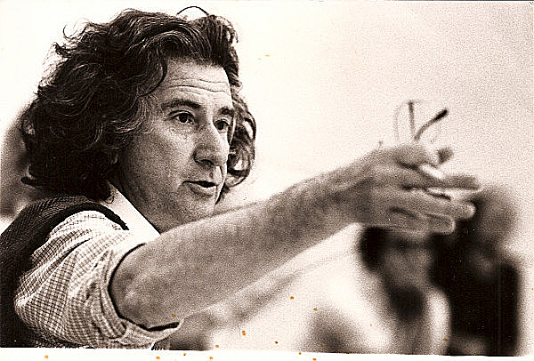
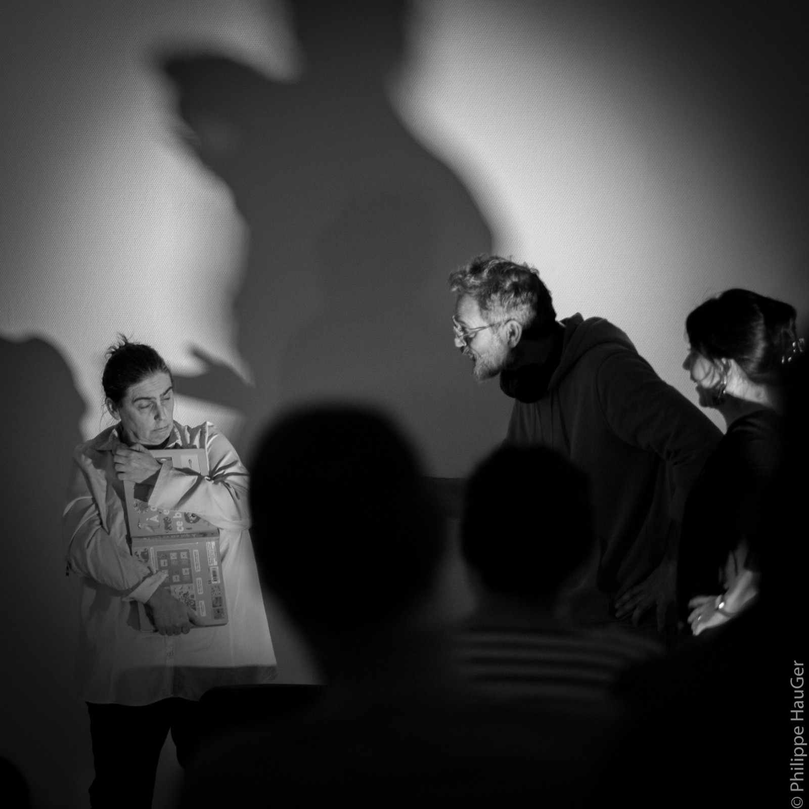
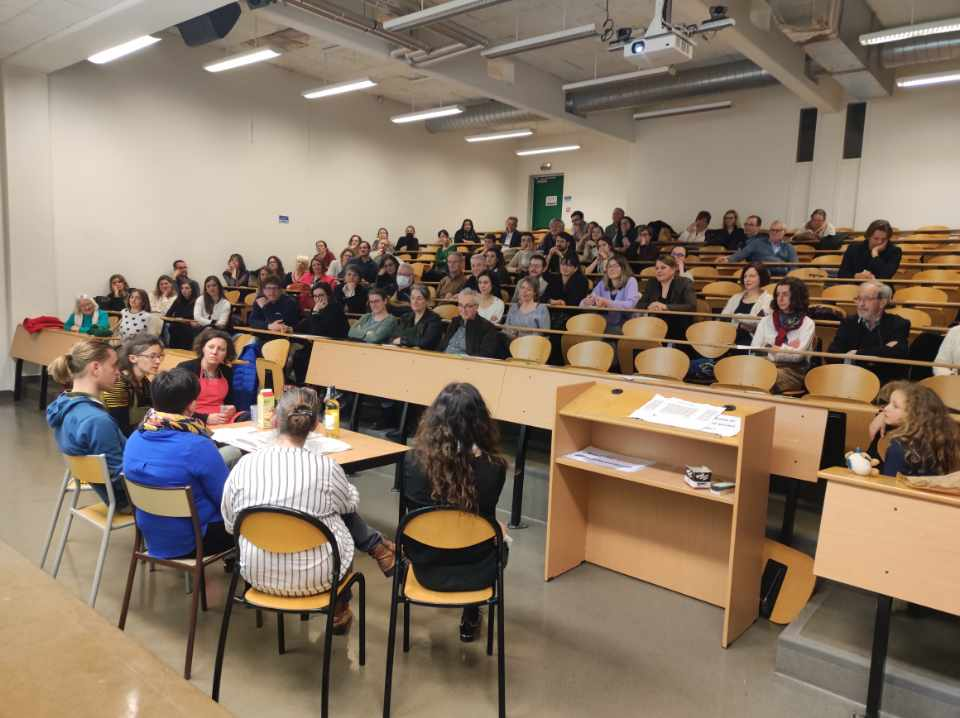

Le théâtre de l'opprimé a été fondé par le dramaturge brésilien Augusto Boal dans les années 1960. C'est une approche interactive qui propose une série de jeux et dynamiques pour prévenir et gérer les enjeux conflictuels de façon ludique et pédagogique.
Le théâtre de l'opprimé offre un panel d'exercices qui permettent d'aborder des problématiques sociales et des formes d'oppressions diverses :
Pour faire émerger des prises de conscience et des changements durables.

Augusto Boal (1931–2009)
« Le théâtre naît quand l'être humain découvre qu'il peut s'observer lui-même… et à partir de cette découverte, il met en place d'autres façons d'agir et de construire. » Augusto Boal

Parmi les différentes techniques du théâtre de l'opprimé, le théâtre forum se présente sous forme de jeux de rôles afin d'illustrer des situations problématiques et d'en explorer des solutions.
Concrètement, lors d'une représentation en théâtre forum, plusieurs saynètes sont proposées. Ces saynètes présentent des situations avec un certain nombre d'enjeux et défis à relever.
L'idée est de transformer chaque saynète grâce au public. Les personnes du public sont appelées spect'Acteurs et spect'Actrices : toute personne peut intervenir en entrant sur scène, en remplacement d'un·e comédien·ne ou en ajoutant un nouveau personnage de son choix.
Comprendre certains facteurs et enjeux qui viennent affecter nos relations interpersonnelles
Développer son pouvoir d'agir en ayant la possibilité de transformer des situations
Ouvrir un espace de dialogue dans un esprit de partage
Prendre du recul par rapport à certaines situations difficiles
Développer des moyens d'expression au service du mieux vivre-ensemble
Développer des compétences psychosociales chez enfants et adultes
C'est une autre technique qui permet de faire éclater une situation dans un endroit incognito pour les passants, pour ensuite faire émerger des interactions entre ces derniers et les comédien·nes.
Sa mise en place est facile et rapide dans un lieu de passage, sans avoir de chaises pour le public. Les comédien·nes préparent en amont des petites saynètes « éclats » et improvisent ensuite à partir des interactions et propositions des personnes présentes.
Voir nos animations de séminaires
Assistez à un spectacle, participez à un atelier : contactez-nous pour en savoir plus.